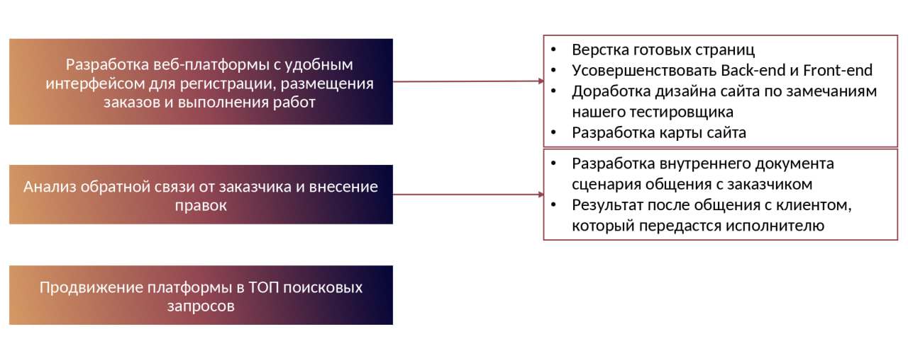

Название
Платформа по металлообработке (сайт)
Актуальность и проблематика
Металлообрабатывающая отрасль, требующая высокого уровня квалификации специалистов и четкого взаимодействия между участниками процесса, остро нуждается в современных цифровых решениях. Существующие платформы не справляются с задачей оперативного подбора мастеров и оформления заказов. Это определяет потребность в создании специализированной системы, которая упростит организацию рабочих процессов в данной сфере.
Суть проекта
Создание онлайн-платформы, которая позволит исполнителям и заказчикам металлообработки находить друг друга и заключать контракты на выполнение работ.
Цели проекта
Взаимодействие
Обеспечение удобного взаимодействия между заказчиками и исполнителями в сфере металлообработки
Упрощение
Упрощение процесса размещения заказов и отслеживания их выполнения
Развитие платформы
Разработка сайта и проверка его функциональности
Задачи проекта
На схеме ниже представлены задачи
Этапы реализации
- Исследование конкурентов, представленных на рынке аутсорсинговых услуг
- Создание и верстка дизайн-макета платформы
- Проведение анализа обратной связи от заказчика по первой версии сайта
- Расширение, исправление и доработка верстка дизайна
- Тестирование функциональности сайта и внесение необходимых доработок
Проведение анализа обратной связи от заказчика по первой версии сайта
После обсуждения первоначальной версии сайта для металлообработки заказчик предоставил ряд правок и пожеланий, которые необходимо учесть для улучшения функциональности и удобства платформы.
Основные замечания и предложения заказчика:
- Реализовать функционал регистрации пользователей на платформе.
- На главной странице предусмотреть выбор категории клиента (роли) с возможностью добавления фильтров по дополнительным критериям.
- Внедрить фильтр по видам работ и методам производства для удобства поиска.
Пожелания на перспективу и для дальнейшего обсуждения:
- Разработать систему гарантии сделок с функцией заморозки средств до выполнения обязательств или взаимного отказа от претензий (с последующим возвратом денег).
- Исключить прямое общение между клиентом и исполнителем, чтобы избежать утечки контактов. Предложить вариант "обезличенного чата".
- Внедрить контроль технических заданий и чертежей с использованием ИИ и проверки штатными инженерами до начала взаимодействия с исполнителем.
Эти правки направлены на повышение удобства пользователей, обеспечение безопасности сделок и улучшение контроля качества выполняемых работ
Дизайн-макет
Главная страница
Личный кабинет
Услуги
Чат